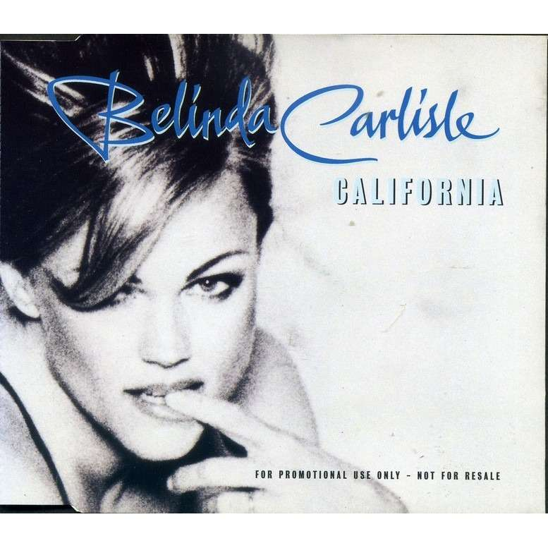

|  |
|
(Lyrics) I remember I was in the tanning salon When I heard that River Phoenix was gone They say that only the good die young But that ain't true where I come from California...California It took a lot for me to say I want to walk away, LA From the sharks and the Chardonnay In California...California 4 in the morning we were in our beds The swaying palm trees above our heads Woke up to a primal rumbling sound When the Northridge quake ripped open the Ground California...California It took a lot for me to say I want to walk away LA From the sharks and the Chardonnay In California... In California Golden State, I'm back in the Golden State Golden State of Mind Golden State, I'm back In the Golden State Golden State of Mind It took a lot for me to say I want to walk away LA From the sharks and the Chardonnay In California... In California Walk, walk away I remember I was in the tanning salon When I heard that River Phoenix was gone... |
(Letra en Español) Recuerdo que estaba en el salón de bronceado Cuando me enteré de que había desaparecido River Phoenix Dicen que sólo los buenos mueren jóvenes Pero eso no es verdad de donde vengo California ... California Me costó mucho para que yo diga Quiero caminar lejos, LA A partir de los tiburones y el Chardonnay En California ... California 4 de la mañana estábamos en la cama Las palmeras se mecen sobre nuestras cabezas Me desperté a un sonido primitivo retumbo Cuando el terremoto de Northridge rasgó el Suelo California ... California Me costó mucho para que yo diga Quiero caminar lejos de LA A partir de los tiburones y el Chardonnay En California ... En California Golden State, estoy de vuelta en el Estado Dorado Golden State of Mind Golden State, estoy de vuelta en el Estado Dorado Golden State of Mind Me costó mucho para que yo diga Quiero caminar lejos de LA A partir de los tiburones y el Chardonnay En California ... En California Camina, camina lejos Recuerdo que estaba en el salón de bronceado Cuando me enteré de que River Phoenix se había ido ... |